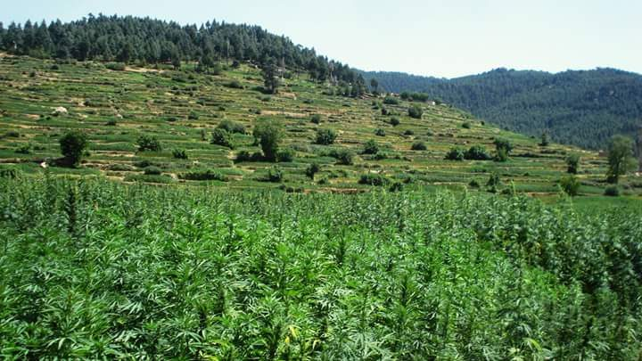
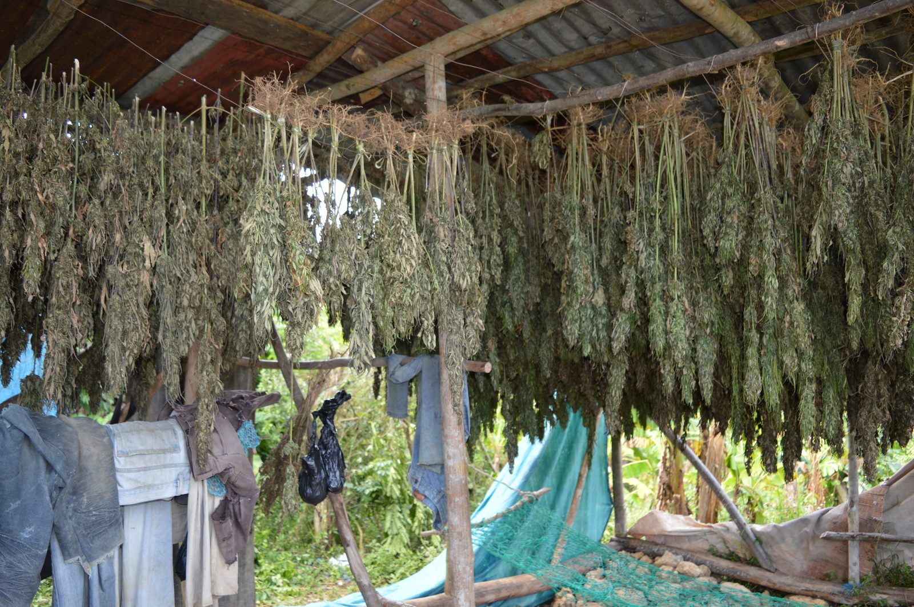
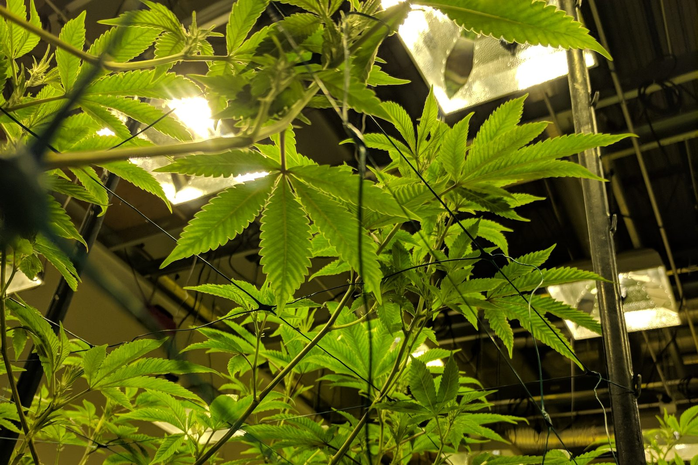
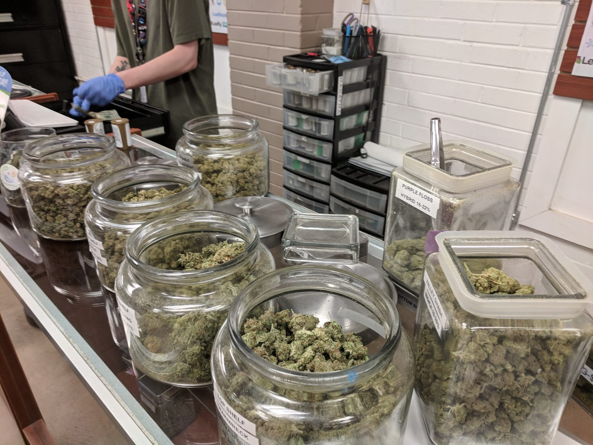

Savvy Security LLC · Policy History
Prescription, Not Permission
126 Years of American Cannabis Policy, and the Case for Putting a Physician Back in the Room
1900 – 2026
For the Reader Who Came Here From Security Work
There’s a pattern you already know. A system gets built fast, on bad threat intelligence, under political pressure. Someone inside the process files a dissent. The dissent is ignored. The system ships. Years later, an internal review confirms the original dissent was correct — and the finding is buried, because by then the system has constituencies, budgets, and careers attached to it. The vulnerability isn’t patched for fifty years.
That is, almost exactly, the history of American cannabis law. The 1937 hearings had a dissenting witness with credentials and data. The 1972 federal commission returned a finding that contradicted the entire premise of the statute it was created to validate. Both were overridden for reasons that had nothing to do with the evidence.
What makes the story worth your time isn’t the failure. It’s the remediation path. This law did not get fixed by people burning it down from outside. It got fixed — slowly, partially, and still incompletely — by people working inside the system: an AMA counsel testifying against his own government’s bill, a glaucoma patient who litigated his way into a federal drug program, a neurologist who ran clinical examinations on four legal patients nobody else would study, and a federal appellate bench that drew a line the government was not permitted to cross. Insiders, using legitimate channels, patching a law.
That’s the argument of this piece, and it leads somewhere specific: the fix isn’t finished, and finishing it does not mean a dispensary on every corner. It means putting cannabis where the evidence says it belongs — in a clinical relationship, under a physician’s direction, manufactured to pharmaceutical standard, dispensed by people with a duty of care.
A note on the photographs in this piece. Three real working farms and facilities mark this article’s arc: a kif field in Morocco’s Rif Mountains, a ganja farm in Jamaica, and a licensed grow facility in Denver, Colorado — the same plant, on three continents, under three entirely different regulatory regimes. Each is captioned and credited where it appears.
I. The Prelude: A Medicine on the Shelf (1839–1900)
Before cannabis was contraband, it was a monograph.

William O’Shaughnessy, an Irish physician working in Calcutta, introduced cannabis preparations to Western medicine in 1839 after documenting their use in Indian practice. Within a decade the plant had a formal place in American medicine: in 1850 the United States Pharmacopeial Convention admitted cannabis as a recognized drug and published an Extract of Hemp monograph. Cannabis was widely used as a patent medicine through the 19th and early 20th centuries, and period dispensatories recommended preparations for a sprawling list of indications — neuralgia, gout, tetanus, cholera, convulsions, spasticity, depression, uterine hemorrhage.
That list is the first thing worth noticing, and it cuts against naive enthusiasm. A drug indicated for everything is a drug studied for nothing. Nineteenth-century cannabis medicine had a real and fatal problem: it could not be standardized. Potency varied by plant, by preparation, by season. Oral dosing produced erratic onset and unpredictable intensity. As injectable morphine, aspirin, and the barbiturates arrived — compounds you could measure in milligrams and deliver reproducibly — plant-based cannabis lost on pharmacological merit before it ever lost on politics.
Hold onto that. The original medical failure of cannabis was a dosing failure. Everything this article argues for downstream is an argument about solving that failure properly.
The first federal touch came in 1906. The Pure Food and Drug Act required over-the-counter preparations containing cannabis to disclose the ingredient on the label, but imposed no prohibition. That is the correct regulatory instinct, and it is worth naming what it was: a labeling and disclosure regime, not a criminal one. The state’s interest was that the patient know what was in the bottle.
II. 1900–1937: How a Labeling Problem Became a Police Problem
Between 1906 and 1937, the framing inverted. Two forces did most of the work.
The first was legal-structural. The Harrison Narcotics Tax Act of 1914 established the template for federal drug control in a constitutional era when Washington had no general police power: you couldn’t ban a substance outright, so you taxed and registered it into practical unavailability. Every later federal drug statute inherited this architecture.
The second was demographic and racial. The Mexican Revolution (1910–1920) drove substantial migration into the American Southwest, and smoked cannabis — under the Spanish-derived name marihuana, a word unfamiliar to the physicians and pharmacists who had been dispensing “cannabis” for sixty years — arrived attached to a population already subject to hostility. Bonnie and Whitebread’s foundational legal history documents how state and federal advocacy for marijuana laws repeatedly and explicitly linked marijuana use to the Mexican minority. The terminological substitution was not incidental. A Congress that would have hesitated to restrict a pharmacopoeial drug their own doctors prescribed had no such hesitation about an alien-sounding intoxicant associated with an out-group.

By the mid-1930s, every state had enacted some form of restriction, largely through the Uniform State Narcotic Drug Act.
III. 1937: The Dissent on the Record
The Marihuana Tax Act is the hinge. Introduced in the House as H.R. 6906 by Robert L. Doughton, it was signed by Franklin Roosevelt on August 2, 1937, and took effect October 1. It was the first national marijuana prohibition law, structured as a prohibitory tax to sidestep constitutional doubts about direct federal regulation, and it passed easily despite opposition from the American Medical Association.
That last clause is the part the popular history drops.
On May 4, 1937, Dr. William C. Woodward — physician, attorney, longtime legislative counsel to the AMA, and a man who had helped draft the Harrison Act itself — appeared before the House Ways and Means Committee. He told them: “The American Medical Association knows of no evidence that marijuana is a dangerous drug.”
He did not stop there. Woodward testified that the Bureau of Prisons had supplied no evidence marijuana was a meaningful factor in federal crime; that the Children’s Bureau and Office of Education had never been consulted about the alleged threat to youth; and that Treasury had drafted the bill in secret over two years without informing the medical profession, though it would affect every physician prescribing cannabis. He objected to the word “marihuana” itself, noting that doctors and the public knew the plant as cannabis and that the unfamiliar term obscured what the bill actually targeted.
The committee’s response is preserved in the record. One member told him that if he couldn’t say something supportive of what they were trying to do, he should go home. Another said they were sick of hearing him. A supporter of the bill then told the House that the AMA backed the measure completely — which was false; the AMA had sent its counsel to testify against it, and by one accounting the entire House floor debate ran about ninety-two seconds before passage by voice vote. Woodward followed up with a formal written protest to the Senate on July 10, 1937, stating he had been instructed by the AMA board of trustees to object to the bill as it concerned the medicinal use of cannabis and its preparations.
A correction, because accuracy matters more than a good story
The version of 1937 that circulates online — Anslinger as sole architect, William Randolph Hearst and DuPont conspiring to kill industrial hemp, Reefer Madness deployed as a lobbying tool — does not survive archival scrutiny. A 2025 paper in Addiction addresses this directly: Anslinger played a far less central role than popular histories claim; he initially opposed federal marijuana prohibition on practical grounds before responding to pressure from state officials and orders from superiors; his claims about madness and violence echoed prevailing American medical and legal opinion rather than inventing it; and the producer of Reefer Madness approached him for endorsement in May 1938 — after the Act had already passed. A separate study argues that national security considerations were a critical and overlooked factor, with Treasury officials anticipating global conflict and designing the law to stimulate domestic cordage production for the military without fueling drug trafficking.
The conspiracy is weaker than advertised. The institutional failure is worse. Nobody needed to bribe Congress — Congress simply declined to listen to the only witness with data, because the witness was inconvenient.
The consequence for medicine was immediate and total. There has been no cannabis monograph in the U.S. Pharmacopeia since its omission in 1942, following concerted pressure from the Federal Bureau of Narcotics. Ninety-two years of American clinical experience were struck from the formulary.
Penalties escalated from there: the Boggs Act of 1951 and the Narcotic Control Act of 1956 attached mandatory minimums to offenses that had been regulatory five years before.
IV. 1970–1972: The Report Nobody Read
The Tax Act died on its own terms. In Leary v. United States (1969) the Supreme Court held the registration scheme unconstitutional on Fifth Amendment self-incrimination grounds — the Act was struck down on May 19, 1969 — and Congress replaced it the following year with the Controlled Substances Act.
Cannabis went into Schedule I: no accepted medical use, high abuse potential, unsafe even under medical supervision. Critically, this placement was made on a temporary basis while further study was conducted, and Congress created a commission to study marijuana and recommend permanent scheduling.
Nixon appointed Raymond Shafer, a Republican former governor of Pennsylvania and a political ally, to chair it. Nixon chose Shafer expecting a reliable validator: a law-and-order Republican leading a commission of legislators, physicians, and legal scholars, from which he had every reason to expect endorsement of his scheduling decision.
In March 1972 the commission delivered Marihuana: A Signal of Misunderstanding. It unanimously recommended that personal possession and non-profit distribution of small amounts be decriminalized, finding that marijuana did not cause physical dependence, did not lead to crime, and did not function as a gateway to harder drugs. The report found users to be more timid, drowsy, and passive than the public imagined, concluded cannabis posed no widespread danger to society, and recommended social measures other than criminalization — drawing an explicit comparison to alcohol.
Nixon rejected it. He ignored the findings despite having appointed nine of the commission’s thirteen members. The White House tapes make the calculation explicit: in a March 1973 recording Nixon says he knows marijuana is not particularly dangerous and knows most young people favor legalizing it — but that it would be the wrong signal at that time. In another recording he acknowledges supporting modification of penalties in many areas while declining to say so publicly.
Read that sequence as a security researcher would. A temporary classification, pending review. A review conducted by a hand-picked, friendly panel. A unanimous finding that the classification was unjustified. A political override, on the explicit record, by a decision-maker who privately agreed with the finding. And then: fifty-four years in Schedule I.
V. 1964–1995: The Pharmacology Arrives, Too Late to Matter
Here is the fact that should reframe the entire debate for anyone coming to it fresh.
The receptor system that cannabis acts on was not discovered until after cannabis was banned. The law was not built on an incorrect reading of the pharmacology. It was built in the absence of the pharmacology.
The sequence: Roger Adams’s group isolated cannabidiol at Illinois in 1940. Raphael Mechoulam isolated and identified THC in 1964, the pivotal moment in cannabinoid chemistry. Then a quarter-century gap — a gap Schedule I helped create, by making the source material nearly impossible to obtain for research. The first cannabinoid receptor, CB1, was identified in rat brain in 1988 by Allyn Howlett and William Devane, who found these receptors more abundant than any other neurotransmitter receptor in the brain.
That finding provoked the obvious question, which Mechoulam stated plainly: receptors do not exist because a plant exists — they exist because the body makes compounds that activate them. In 1992 his lab isolated the first endocannabinoid, arachidonoyl ethanolamide, named anandamide; the lab shortly afterward isolated 2-arachidonoylglycerol. CB2 followed in 1993, predominantly in immune and nervous tissue.
So: a regulatory finding of “no accepted medical use” was entered in 1970. The endogenous signaling system explaining why the plant does anything at all was characterized between 1988 and 1995. The finding was never revisited on the merits.
This is also why the scientific literature on cannabis is thinner and messier than the literature on comparably-used substances. Schedule I didn’t just criminalize the plant — it throttled the study of it for two generations. Anyone arguing “the evidence is weak” needs to account for who made it weak.
VI. 1976–1992: Actual Patient Records
You asked for patient records. These are the best ones that exist in American medicine, and the story of how they came to exist is the heart of the argument.
Robert Randall had progressive glaucoma. In 1976 he won a medical-necessity defense in federal court, and the government — rather than see the precedent spread — created the Compassionate Investigational New Drug program. Under it, a small number of patients received cannabis obtained from the National Institute on Drug Abuse, used under the supervision of a study physician, approved through the FDA’s Compassionate IND program. The program was closed to new patients by HHS in 1992.
In 2001, a team led by neurologist Ethan Russo — with nurse Mary Lynn Mathre, neuropsychologists, and a movement-disorder specialist — obtained access to the surviving patients and conducted the Missoula Chronic Clinical Cannabis Use Study. Published in 2002, it remains the only systematic long-term clinical examination of legal, standardized, physician-supervised therapeutic cannabis use in the United States.
The design matters as much as the results. The project examined four of the seven surviving patients and provided the first opportunity to scrutinize long-term effects in people who had used a known dosage of a standardized, heat-sterilized, quality-controlled supply for 11 to 27 years.
The findings
Results demonstrated clinical effectiveness in treating glaucoma, chronic musculoskeletal pain, spasm and nausea, and multiple sclerosis spasticity. All four patients were stable with respect to their chronic conditions and were taking substantially fewer standard pharmaceuticals than previously. Mild changes in pulmonary function were observed in two patients; no functionally significant attributable sequelae were noted in any other physiological system examined, including MRI.
Neuropsychological testing was not a whitewash, and the honesty is why the study is worth citing. Four patients using NIDA cannabis for decades, at up to 10 grams per day of low-potency material, showed mild difficulties in attention and concentration and with acquisition of complex new verbal material — but without effect on higher-level executive function, and with no pertinent attributable findings on MRI. No changes in leukocyte, CD4, or CD8 counts were documented.
Now note every structural feature of that program:
- Known, consistent dosage. Not “a gram of whatever the shop had.”
- Standardized, quality-controlled, heat-sterilized supply. A manufacturing chain with an accountable producer.
- Physician supervision throughout. Decades of it.
- Longitudinal documentation that made the 2002 analysis possible at all.
- Reduced concomitant pharmaceutical burden, measured rather than asserted.
Those five features are not incidental to the good outcome. They are a description of pharmaceutical medicine. The strongest human evidence for therapeutic cannabis in the American record came from the one context in which cannabis was handled exactly the way a drug is supposed to be handled.
The follow-up detail is its own indictment: by 2018, three of the studied patients had lost access to NIDA cannabis, though one continued daily use from other sources. The federal government ran the best therapeutic cannabis program in the country’s history, learned from it, and closed it.
VII. 1996–2005: The Doctors Take the Risk
The next patch came from patients dying of AIDS and the clinicians who wouldn’t abandon them.
Proposition 215 was conceived by San Francisco activist Dennis Peron in memory of his partner, Jonathan West, who had used marijuana to treat AIDS symptoms. Peron had run the San Francisco Cannabis Buyers Club in open defiance of the law; in 1991 he organized Proposition P, a San Francisco medical marijuana measure that passed with 79% of the vote, and in 1995, with Dale Gieringer and John Imler, formed Californians for Compassionate Use to put the question on the state ballot after the governor vetoed legislative attempts.
On November 5, 1996, California voters approved Proposition 215, the Compassionate Use Act, with 55.6% of the vote — the first state medical marijuana law, allowing patients with a doctor’s recommendation to use cannabis for serious illnesses including cancer, AIDS, glaucoma, and chronic pain.
And here is the design decision that defines everything after: the measure required a physician’s recommendation, not a prescription — because federal law barred doctors from prescribing a Schedule I substance. Physicians had joined the campaign arguing they should be able to recommend cannabis without losing their licenses.
The federal government went straight at the doctors. Drug czar Barry McCaffrey called the law a cruel hoax and threatened to prosecute physicians who recommended cannabis. The threat was specific: lose your DEA registration — meaning lose the ability to prescribe anything — for the act of telling a patient the truth about a treatment option.
Physicians and patients sued. They won at the district court, and won again on appeal. In Conant v. Walters, 309 F.3d 629 (9th Cir. 2002), the Ninth Circuit affirmed an injunction barring the federal government from revoking a physician’s controlled-substances registration, or investigating toward revocation, where the sole basis was the physician’s professional recommendation of medical marijuana — agreeing that the federal policy threatened to interfere with expression protected by the First Amendment. The court drew the operative line: a doctor would aid and abet only by acting with specific intent to provide a patient the means to acquire marijuana; mere anticipation of what a patient might do does not constitute aiding and abetting or conspiracy. The Supreme Court declined review on October 14, 2003.
Conant is the most underrated document in this history. It did not legalize anything. What it established is narrower and more durable: the clinical conversation is constitutionally protected. A doctor may assess, advise, and recommend. Since Conant, the federal government has not attempted to act on its proposed enforcement policy against physicians, and thousands of doctors have issued recommendations or certifications.
Note who did the fixing at each stage: an AMA counsel. A federal commission of physicians and legal scholars. A neurologist and a registered nurse. A patient with a lawyer. A three-judge panel of the Ninth Circuit. Not one of them was working outside the system. All of them were working through it, at professional risk.
VIII. 2012–2026: What Commercialization Actually Produced
Colorado and Washington legalized adult use in 2012. Two dozen-plus states followed. The medical framework — built by patients, doctors, and judges over forty years — became the legal scaffolding for a consumer products industry.
Here is what the data now shows.

Potency climbed and kept climbing
DEA-seized sample analysis by the University of Mississippi found mean THC content rising from roughly 4% in 1995 to about 12% in 2014, and near 14% by 2019; the same research program reported average potency rising from 3% in 1995 to 15% by 2021. Retail products run well past that. Legal-market cannabis is generally reported above 15% THC and as high as 45% in retail surveys, with studies of publicly available data reporting averages of 15% to 23.2%. Concentrates routinely exceed 60–70%. Meanwhile CBD — the constituent with plausible buffering properties — has been bred nearly out of the commercial supply.
Use pattern shifted from occasional to habitual
Jonathan Caulkins’s 2024 analysis in Addiction, drawing on 1,641,041 participants across 27 national surveys since 1979, found that from 1992 to 2022 past-month cannabis users rose from 7.9 million to 41.9 million, and the share reporting daily or near-daily use rose from 11% to 42%. In 2022, an estimated 17.7 million people reported daily or near-daily cannabis use versus 14.7 million daily or near-daily drinkers — the first time intensive cannabis use overtook intensive drinking — with the per-capita rate of daily use having risen fifteen-fold since 1992. Caulkins’s own characterization is the one to sit with: roughly 40% of current users consume daily or near-daily, a pattern more associated with tobacco than with typical alcohol use.
High-potency daily use carries a measurable psychiatric signal
The EU-GEI multicentre case-control study, published in The Lancet Psychiatry in 2019, examined first-episode psychosis across eleven European sites. Daily cannabis use was associated with increased odds of psychotic disorder versus never-users (adjusted OR 3.2, 95% CI 2.2–4.1), rising to nearly five-fold for daily use of high-potency types (OR 4.8, 2.5–6.3). Population attributable fractions indicated that if high-potency cannabis were unavailable, 12.2% of first-episode psychosis cases could be prevented across the eleven sites, rising to 30.3% in London and 50.3% in Amsterdam. Daily use was reported by 29.5% of first-episode patients versus 6.8% of controls.
That is an association in a case-control design, not proof of causation, and reverse causation and confounding are live concerns. But the dose-response gradient and the geographic correlation with market potency are exactly what you would expect if potency mattered — and the commercial market is optimized to maximize precisely that variable.
The medical programs are hollowing out
Analysis of registry data from 23 states between 2013 and 2020 found medical cannabis enrollment increased in states without recreational laws and decreased in states with them. Marijuana Policy Project data shows Arizona down 70% since adult-use sales began, Michigan down 71%, Colorado down 44%, Maryland down 37%. And the most consequential finding, from Boehnke and colleagues in Annals of Internal Medicine: in 13 of 15 adult-use jurisdictions medical enrollment fell, and the proportion of patient-reported qualifying conditions with substantial or conclusive evidence of therapeutic value dropped from 70.4% to 53.8%.
Read that last number carefully. Under commercialization, the evidentiary quality of the reasons people give for medical use degraded by seventeen percentage points. The medical category didn’t grow more rigorous as the science matured. It got vaguer as the retail market absorbed it.
And the illicit market did not die
California is the cleanest test case — the state that started this in 1996 and went adult-use in 2016. Per its own Department of Cannabis Control, the share of total consumption supplied by the licensed market remains stable at around 40 percent. In 2024, licensed producers grew about 1.4 million pounds against roughly 11.4 million pounds from unlicensed operations, and licensed sales fell to $3.9 billion in 2025 from $4.2 billion in 2024. Nine years after legalization, the majority of consumption in the birthplace of medical cannabis still moves through channels with no testing, no labeling, and no accountability.
The 1906 Pure Food and Drug Act had one job: make sure the patient knows what’s in the bottle. In California in 2026, for most of what’s consumed, we still don’t.
IX. Kleiman’s Middle Course
In 1992 — four years before Prop 215, twenty years before Colorado — Mark Kleiman published Against Excess: Drug Policy for Results, and it remains the most useful framework anyone has produced for this problem.
Kleiman argued for a middle course between prohibition and complete legal availability: a new category of “grudging toleration” applicable to alcohol and to some currently prohibited drugs. The book is a critique of both legalization and prohibition — of the view that treats drugs as innocent ordinary consumer goods, and of the unrealistic and expensive cultural war against intoxication.
On cannabis specifically, he wrote that a system of high taxation and tight regulation might control damage about as well as total prohibition while costing less and producing fewer unwanted side effects — and he was candid that such a system is far easier to describe in concept than to build in practice. He paired that with a proposal that has been almost entirely ignored in the thirty-four years since. Among his summary conclusions: cannabis has substantial therapeutic potential and should be licensed for medical purposes even if it remains illicit for non-medical use — and doing so would have negligible effect on abuse.
That is the thesis of this article, stated in 1992 by the analyst whose tax-and-regulate framework the states then adopted — while dropping the medical-licensure half of it entirely.
The honest caveat, because your readers deserve it: Kleiman’s own views moved. By the 2010s he was publicly arguing that Congress should proceed to legalize cannabis sales, on the grounds that enforcement had failed and that a regulated market was the better route to moderate use — a position his critics at the time noted and attacked. Citing him as an authority against commercialization requires acknowledging that he ultimately came down somewhere else. What survives is the analytical frame, not his final vote: that these are not two options but three, and that the middle one was never seriously tried.
A note on a figure that circulates: Kleiman is frequently credited with proposing an excise tax of 200% or more over production cost. That specific multiple could not be sourced to the text of Against Excess in preparing this article, and it should be treated as unverified attribution. The documented position is high excise taxation paired with tight state control — without a published multiplier.
X. The Argument: A Physician-Directed Model
The case is not that cannabis is dangerous. The case is that cannabis is a drug, and drugs have an infrastructure. We built that infrastructure over a century for good reasons, and cannabis is the only substance with genuine therapeutic indications that we have deliberately routed around it.
What the clinical relationship supplies that a retail counter cannot:
1. Dose standardization
The nineteenth-century failure of cannabis medicine was variable potency. We solved that problem for every other botanical-derived drug — digoxin, morphine, paclitaxel — by isolating, standardizing, and titrating. The Missoula cohort did well on a known, consistent, quality-controlled dose over decades. Dispensary flower labeled “24% THC” is not a dose. It is a marketing claim, and independent testing has found retail THC labels systematically inflated relative to measured content.

2. Indication matching against actual evidence
The National Academies’ 2017 review remains the reference standard. It found conclusive or substantial evidence that cannabis or cannabinoids are effective for chronic pain in adults, as antiemetics for chemotherapy-induced nausea and vomiting (oral cannabinoids), and for improving patient-reported multiple sclerosis spasticity (oral cannabinoids), with modest to moderate effect sizes, and inadequate information to assess effects for the other conditions evaluated. That is a real but narrow list. A clinician can match a patient to it. A retail transaction cannot, and the Boehnke data shows it doesn’t.
3. Contraindication screening
This is the pillar that matters most and that no market mechanism provides. The EU-GEI data identifies a population — young, daily, high-potency — at meaningfully elevated psychiatric risk. A physician taking a family history of psychotic illness before authorizing a high-THC product is performing a screening function that a budtender is neither trained nor licensed nor incentivized to perform.
4. Drug-drug interaction management
Cannabinoids are metabolized through cytochrome P450 pathways shared with warfarin, many antiepileptics, and numerous psychiatric medications. The Epidiolex program illustrates what serious pharmacovigilance produces: approved by FDA on June 25, 2018 for patients two and older with Dravet syndrome or Lennox-Gastaut syndrome, the first plant-derived purified pharmaceutical-grade cannabidiol medication, on the strength of trials in which 120 Dravet patients were randomized to 20 mg/kg/day or placebo over 14 weeks, with documented adverse events including somnolence, diarrhea, decreased appetite, and elevated transaminases, producing a 39 percent drop in seizure frequency. That is a known compound, a known dose, a known interaction profile, and a known risk sheet. That is what medicine looks like.
5. Pharmacovigilance and longitudinal record
The only reason we have the Missoula data is that someone kept records. Retail sales generate loyalty-program data, not clinical data. We are conducting the largest uncontrolled cannabinoid exposure experiment in history and capturing almost none of it.
6. Reimbursement — which is the real equity argument
Medical cannabis is paid out-of-pocket by patients who are, by definition, sick. The registry data reflects who can afford that: a retrospective analysis of 61,379 patients across 33 U.S. medical cannabis evaluation clinics found an average age of 45.5 and a population 87.5% Caucasian, with two-thirds reporting cannabis experience before seeking certification. A pharmaceutical pathway with FDA-approved products creates something no dispensary model can: a covered benefit. The poorest patients don’t get access through a storefront. They get it through a formulary.
The triad
Manufacturers producing to GMP standard with verified cannabinoid content and stability data. Physicians — certified in the relevant specialty, trained in cannabinoid pharmacology — assessing, authorizing, titrating, and monitoring. Dispensaries operating under pharmacist oversight as the fulfillment layer, with counseling duties and adverse-event reporting obligations. Each does what it is competent to do. None substitutes for the others.
XI. What This Model Must Not Become
An argument against full commercialization is not an argument for prohibition, and anyone who reads it that way has read it wrong. The following are load-bearing:
Possession must not be criminal
The enforcement record is indefensible and does not improve on its own. The ACLU’s 2020 analysis found Black people 3.64 times more likely than white people to be arrested for marijuana possession despite comparable usage rates, and — critically — in every state and over 95 percent of counties examined, with disparities larger in 31 states in 2018 than in 2010, and disparities persisting in every state that legalized or decriminalized. Decriminalization of possession is a precondition of this model, not a concession to it. Expungement is owed.
Patients must not lose what they already have
Home cultivation for registered patients, caregiver provisions, and existing supply channels stay. The transition to a pharmaceutical standard cannot be a gap in access for people currently stable on a regimen. The Compassionate IND patients who lost their federal supply are the cautionary case.
The pharmaceutical industry must not get a monopoly
A physician-directed model is not a gift to three companies. It requires multiple licensed manufacturers, full-spectrum preparations alongside isolates where the evidence supports them, generic pathways, and aggressive price regulation. If the result is a $2,000-a-month product where a $200 one would do, the illicit market wins on the merits and this entire argument collapses.
Costs must go down, not up
California’s central lesson is that reducing costs for licensed businesses and increasing costs for illicit operations are the effective levers. A legal channel that prices patients out is a subsidy to the unregulated one.
The people who built this get to stay
The dispensary operators, cultivators, and clinicians who took legal risk for thirty years should not be regulated out in favor of incumbents who opposed them. Grandfathering and transition licensing are a matter of basic justice.
XII. The Case Against This Argument
Intellectual honesty requires putting the strongest opposing case on the table, and there is one.
Autonomy. The most serious objection is simply that adults have the right to alter their own consciousness, and that requiring a doctor’s permission to use a substance less lethal than alcohol is paternalism wearing a lab coat. This argument does not depend on medical evidence at all, which is what makes it hard to answer on medical grounds. The honest response is that it is a real cost, that this framework does impose it, and that the offsetting benefit is protection of a population — young, predisposed, daily, high-potency users — that bears the concentrated harm.
Gatekeeping fails the people it claims to serve. Physician certification costs money, requires access to a willing clinician, and creates a registry. Patients leave medical programs in part because they prefer not to be on a government registry and would rather not pay for certification when an over-the-counter option exists. If the gate is expensive and stigmatizing, patients route around it — which is precisely what the enrollment data shows.
The medical model has its own fictions. Much of pre-2012 “medical” cannabis was recreational use with a doctor’s note as legal cover, from clinics whose business model was issuing them. A physician-directed model has to survive the fact that its own history includes a large volume of rubber-stamping.
The evidence is more modest than advocates claim, and the cautionary evidence cuts both ways. The most-cited finding in medical cannabis policy did not replicate. Bachhuber and colleagues reported in JAMA Internal Medicine in 2014 that medical cannabis laws were associated with a mean 24.8% lower annual rate of opioid analgesic overdose deaths. Shover and colleagues extended the identical analysis through 2017 in PNAS and found the association reversed direction from −21% to +23%, remaining positive after accounting for recreational laws, with the authors concluding the original relationship was most plausibly spurious. That is a lesson about ecological correlations, and it should make everyone — on every side — slower to claim a policy win from state-level data.
Regulatory capture is a genuine risk. “Doctors and pharmaceutical companies working in tandem” is also a description of how the opioid crisis was manufactured. The institutions this article wants to put in charge have a recent, catastrophic failure on exactly this kind of product.
None of these are cheap shots. The strongest version of the opposing position is that the medical model is a bottleneck dressed as a safeguard, and that the honest comparison is between an imperfect commercial market and an imperfect gatekeeping regime — not between a commercial market and an idealized clinic.
XIII. April 2026: The Government Has Already Half-Adopted It
While this debate has been running in the abstract, the federal government made a move that is, structurally, the exact framework this article argues for.
Following a December 2025 executive order directing expedited action, on April 23, 2026 the DOJ and DEA issued an order immediately placing both FDA-approved products containing marijuana and marijuana products regulated by a state medical marijuana license in Schedule III of the Controlled Substances Act — the biggest federal shift on cannabis regulation since 1970. Adult-use marijuana — including state-licensed adult-use dispensaries selling without a medical certification — was not rescheduled and remains Schedule I. The order was effective April 28, 2026, and it carried immediate practical consequences: elimination of the Section 280E tax-deduction disallowance going forward for qualifying medical licensees, and an expedited DEA registration pathway.
The government’s own reasoning is the argument of this piece. In its post-hearing brief, DEA argued marijuana no longer fits the statutory requirements for Schedule I because it has a currently accepted medical use in the United States and accepted safety under medical supervision, citing over 30,000 practitioners treating more than six million patients across 43 U.S. jurisdictions. Note the two load-bearing phrases: under medical supervision, and practitioners treating patients. The federal finding rests entirely on the existence of the clinical relationship.
The broader question is live right now. The hearing before ALJ Derek Julius ran to consider rescheduling all marijuana to Schedule III; his recommendation goes to DEA Administrator Terry Cole, participants may file objections within 20 days, and a rejection of the ALJ recommendation can be challenged in the D.C. Circuit. As of mid-September 2026 Julius has not issued that recommendation, and a bipartisan group of House members has set a September 30 deadline for answers on how the Schedule III framework will operate in practice.
So: the medical pathway is federally recognized. The recreational one is not. Whether that remains a principled distinction or collapses into a formality is being decided in an administrative proceeding, this month.
Conclusion
Eighty-nine years ago a physician told Congress there was no evidence the drug they were banning was dangerous, and was told to go home. Fifty-four years ago a presidential commission told the President the same thing, and he refused to read it. Both were right. Both were overridden. The cost of those two overrides is measurable in millions of arrests, in two generations of suppressed research, and in patients who spent their lives being told a medicine that worked for them did not exist.
That history is a genuine indictment of prohibition, and nothing in this article softens it.
But the lesson people have drawn from it — that because the prohibitionists were wrong, the market should be unsupervised — does not follow, and the data from the commercial era does not support it. Potency has quadrupled. Daily use has overtaken daily drinking. The evidentiary basis for “medical” use has degraded in exactly the states that legalized. In California, most consumption still happens outside any regulatory perimeter at all. We have not solved the 1906 problem. We have re-created it at scale, with better branding.
The best outcomes in the entire American record came from the one program that treated this as medicine: standardized supply, known dose, physician supervision, longitudinal records, documented reduction in other medications. Four patients over three decades. It was small, it was grudging, and the government shut it down — but it worked, and it is the only thing in this history that we can say that about with confidence.
The people who got us this far were insiders: an AMA counsel, a commission of physicians, a neurologist and a nurse, a patient with a lawyer, a panel of federal judges. They didn’t win by rejecting the system’s standards. They won by holding the system to them.
Prescription.
Sources
Primary law and government documents
- Marihuana Tax Act of 1937, Pub. L. 75-238, 50 Stat. 551.
- Hearings on H.R. 6385, House Ways and Means Committee, 75th Cong., 1st Sess. (Apr. 27–30, May 4, 1937) — testimony and written protest of Dr. William C. Woodward, American Medical Association.
- Leary v. United States, 395 U.S. 6 (1969).
- Controlled Substances Act, Pub. L. 91-513 (1970).
- National Commission on Marihuana and Drug Abuse, Marihuana: A Signal of Misunderstanding (1972).
- California Proposition 215, Compassionate Use Act (1996), Cal. Health & Safety Code § 11362.5.
- Conant v. Walters, 309 F.3d 629 (9th Cir. 2002), cert. denied (2003).
- Gonzales v. Raich, 545 U.S. 1 (2005).
- DOJ/DEA Final Order rescheduling FDA-approved marijuana products and state-licensed medical marijuana to Schedule III (Apr. 23, 2026); DEA administrative hearing, June 29 – July 15, 2026.
Books
- Kleiman, M.A.R. Against Excess: Drug Policy for Results. Basic Books, 1992.
- Bonnie, R.J. & Whitebread, C.H. The Marihuana Conviction: A History of Marihuana Prohibition in the United States. University Press of Virginia, 1974. See also “The Forbidden Fruit and the Tree of Knowledge,” 56 Va. L. Rev. 971 (1970).
Peer-reviewed literature
- Russo, E., Mathre, M.L., Byrne, A., Velin, R., Bach, P.J., Sanchez-Ramos, J., & Kirlin, K. (2002). Chronic cannabis use in the Compassionate Investigational New Drug Program. Journal of Cannabis Therapeutics, 2(1), 3–57. doi:10.1300/J175v02n01_02
- National Academies of Sciences, Engineering, and Medicine (2017). The Health Effects of Cannabis and Cannabinoids: The Current State of Evidence and Recommendations for Research. National Academies Press. doi:10.17226/24625
- Di Forti, M., Quattrone, D., Freeman, T.P., et al. (2019). The contribution of cannabis use to variation in the incidence of psychotic disorder across Europe (EU-GEI): a multicentre case-control study. The Lancet Psychiatry, 6(5), 427–436.
- Caulkins, J.P. (2024). Changes in self-reported cannabis use in the United States from 1979 to 2022. Addiction, 119(9), 1648–1652.
- ElSohly, M.A., et al. (2016). Changes in cannabis potency over the last two decades (1995–2014). Biological Psychiatry; and ElSohly et al. (2021) update.
- Devinsky, O., et al. (2017). Trial of cannabidiol for drug-resistant seizures in the Dravet syndrome. New England Journal of Medicine, 376(21), 2011–2020.
- Bachhuber, M.A., Saloner, B., Cunningham, C.O., & Barry, C.L. (2014). Medical cannabis laws and opioid analgesic overdose mortality in the United States, 1999–2010. JAMA Internal Medicine, 174(10), 1668–1673.
- Shover, C.L., Davis, C.S., Gordon, S.C., & Humphreys, K. (2019). Association between medical cannabis laws and opioid overdose mortality has reversed over time. PNAS, 116(26).
- Boehnke, K.F., et al. (2022). U.S. trends in registration for medical cannabis and reasons for use from 2016 to 2020. Annals of Internal Medicine. doi:10.7326/M22-0217
- Mahabir, V.K., Merchant, J.J., Smith, C., & Garibaldi, A. (2020). Medical cannabis use in the United States: a retrospective database study. Journal of Cannabis Research. doi:10.1186/s42238-020-00038-w
- McAllister, W.B. (2019). Harry Anslinger saves the world: national security imperatives and the 1937 Marihuana Tax Act. Social History of Alcohol and Drugs, 33(1), 37–62.
- Correcting popular misconceptions about the origins of the Marihuana Tax Act of 1937. Addiction (2025). doi:10.1111/add.70280
- Gaoni, Y. & Mechoulam, R. (1964), THC isolation; Devane, W.A., et al. (1992), anandamide isolation; Munro, S., et al. (1993), CB2 receptor characterization.
Reports and datasets
- American Civil Liberties Union (2020). A Tale of Two Countries: Racially Targeted Arrests in the Era of Marijuana Reform.
- California Department of Cannabis Control (2025). California Cannabis Market Outlook and Report on the Condition and Health of the Cannabis Industry.
- Marijuana Policy Project. Medical Cannabis Patients Post-Legalization (state-by-state enrollment data).
- United States Pharmacopeial Convention — historical monograph record, USP (1850–1942).
Malcolm R. Smith writes on security, policy, and institutional failure for Savvy Security LLC.